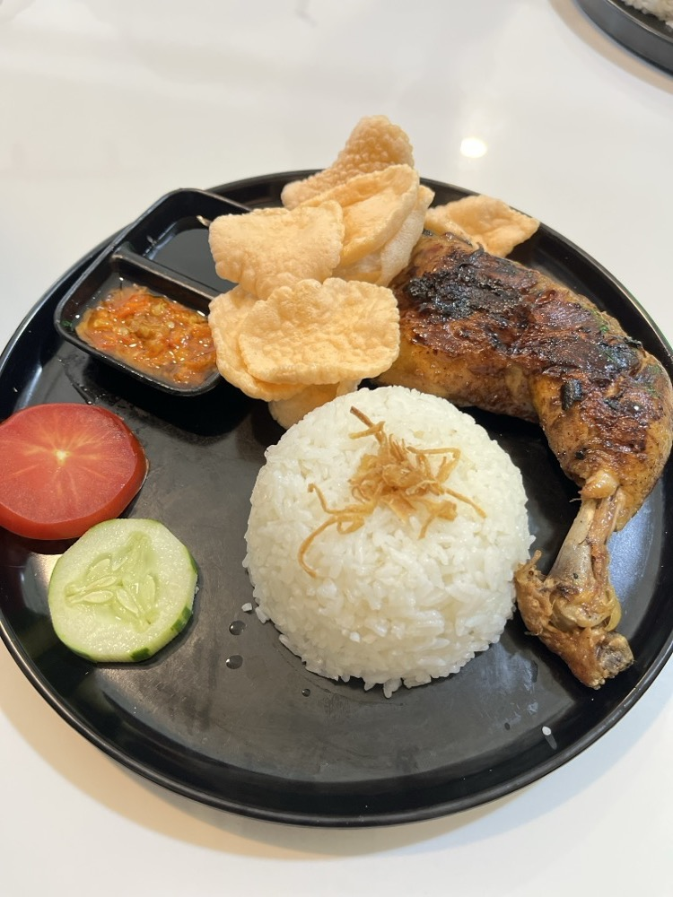

ANDALAN DAPOER TINY
Menu Spesial
Ayam Bakar Madu yang dimarinasi dengan rempah pilihan dan dipanggang perlahan hingga bumbunya meresap.

Fresh Dari Panggangan
Dapoer Tiny — Ayam Bakar Madu Spesial
Ayam Bakar Karamel Madu Murni Gurih Meresap dengan Sambal Bajak Khas
Rp 28.000
Termasuk Sambal Pedas Nikmat & Lalapan Segar
Sajian primadona Dapoer Tiny menggunakan daging ayam segar pilihan yang dimarinasi 12 jam dengan bumbu rempah warisan dan madu hutan murni. Dibakar perlahan hingga bumbu terkaramelisasi harum, tekstur daging sangat empuk dan bumbu gurih manisnya meresap sampai ke serat terdalam.
1
Pengiriman Hangat
Instant & Sameday delivery
100% Halal & Higienis
Dapur bersih standar tinggi
Garansi Nikmat
100% kepuasan rasa